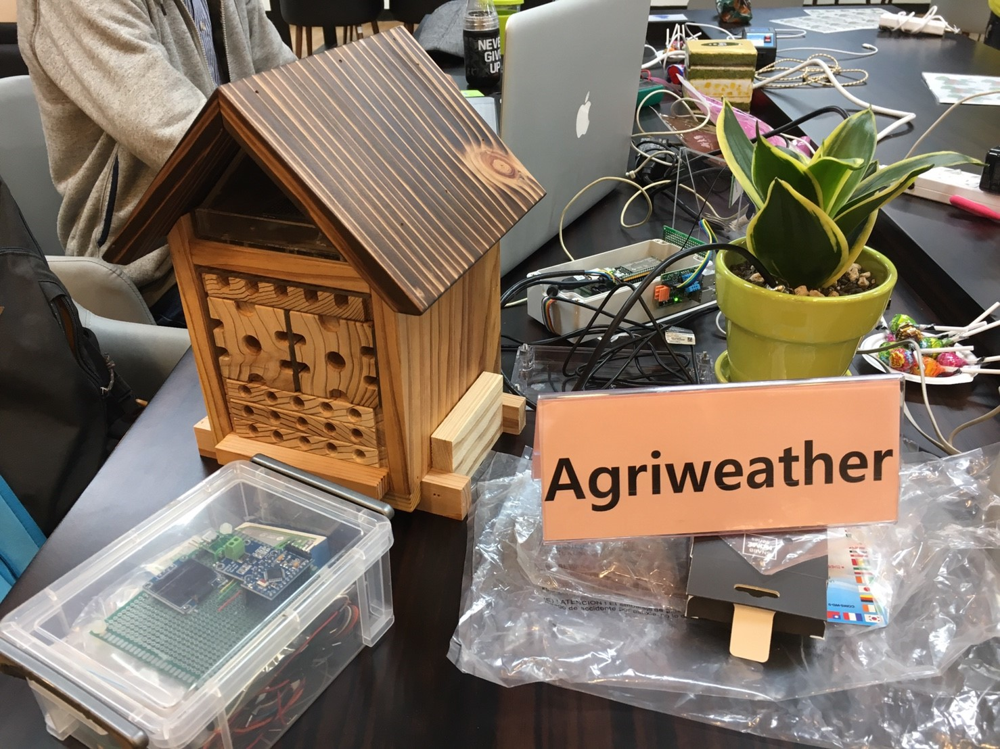

Agri Micro-Weather Station
AgriWeather Team from Taiwan
Agriweather aims to create a new tool, combined IOT device with data science based on the application of agriculture microclimate, open data and experts’ knowledge, to help urban farmers.

This team of AgriWeather supported by the development of “g0v” project in Taiwan consists of multi-disciplinary experts, such as data scientists, IT farmers, makers, software engineers, agricultural experts, communication researchers, art designers, and so on. The core perspective of the team is to take effort to develop Taiwan’s agriculture well.